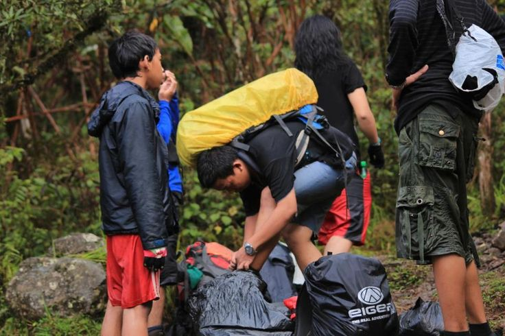

Katalog Paket Pendakian
Pilih jalur dan durasi yang sesuai dengan kemampuan Anda.
Tarif Paket
| Paket | Jalur | Durasi | Harga/orang |
|---|---|---|---|
| Sembalun Ringkas | Sembalun - Sembalun | 2H1M | Rp 1.500.000 |
| Segara Anak | Sembalun - Senaru | 3H2M | Rp 2.200.000 |
| Paket Keluarga | Senaru | 2H1M | Rp 1.800.000 |
| Torean | 2H1M | Rp 1.700.000 | |
| Full Trip | Sembalun - Torean | 4H3M | Rp 3.000.000 |
| Diskon rombongan 5 orang atau lebih | 10% | ||
Layanan


